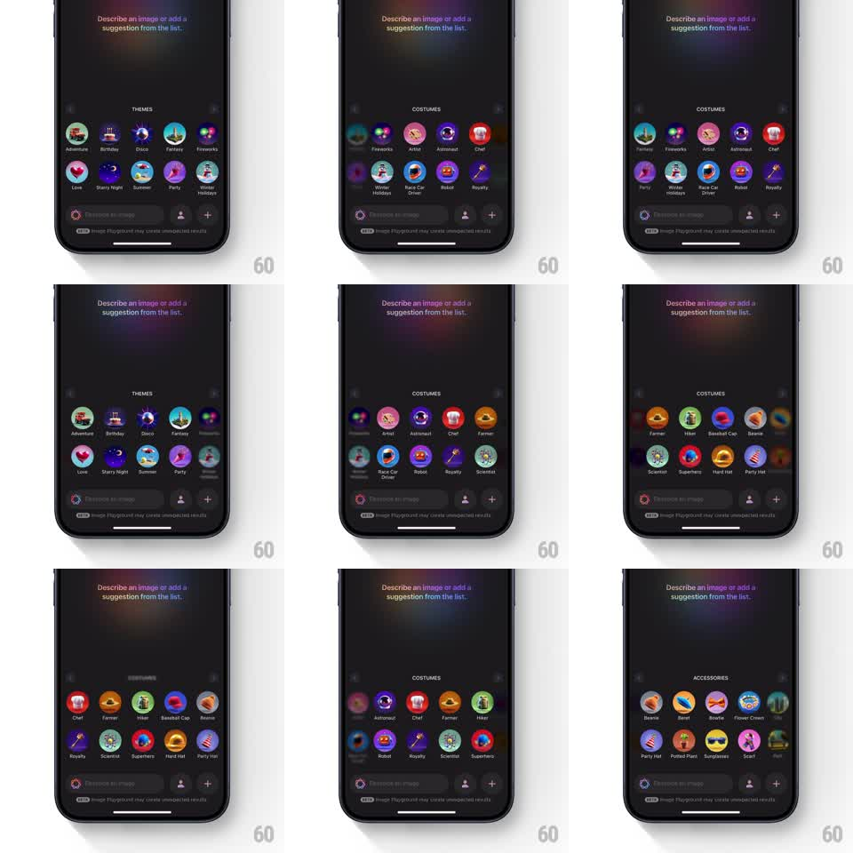

Media
Frame-by-frame

Rebuild this interaction 1:1: Apple Image Playground's category picker - swiping horizontally between category grids (THEMES, COSTUMES, ACCESSORIES) makes the outgoing icon grid scale down, blur, and fade while the incoming grid scales up from blurred, with the section title crossfading above a fixed prompt bar.

Rebuild this interaction 1:1: Apple Image Playground's category picker - swiping horizontally between category grids (THEMES, COSTUMES, ACCESSORIES) makes the outgoing icon grid scale down, blur, and fade while the incoming grid scales up from blurred, with the section title crossfading above a fixed prompt bar. ## Integration Integration: stack-agnostic spec - springs given as stiffness/damping, timed motions as duration + curve; map every value to your framework and animation library of choice. ## Scene Dark screen of an image-generation sheet: "Describe an image or add a suggestion from the list." header, a section title (THEMES / COSTUMES / ACCESSORIES) centered above a 4-column grid of round icon chips with labels (Adventure, Birthday, Disco, Fantasy / Artist, Astronaut, Chef, Farmer / Beanie, Beret, Bowtie, Flower Crown...). Fixed bottom bar: text field "Describe an image", person button, + button, disclaimer line. Edge pills hint the adjacent category. ## Motion spec Pattern: horizontal swipe paging with blur-scale crossfade. - Drag follows the finger: the outgoing grid translates with the swipe while each icon scales down (to ~0.75), blurs (radius 0 -> 12pt), and fades (opacity to 0.25) staggered from swipe-leading edge (15ms per icon). - The incoming grid enters from the drag edge already blurred and small (blur 12pt, scale 0.85), resolving to sharp/full size with the same stagger as the drag commits. - Release: page settles with a spring (~320/22), icons finishing their unblur in a wave. - The section title crossfades and slides slightly with the page (translateX 12pt, 200ms). - Edge previews: the adjacent grid peeks in at ~20% width during the drag, giving the carousel depth. ## Calibration - Blur and scale track drag distance continuously - no snapping mid-gesture. - The wave stagger reads like fabric rippling through the grid. ## Reduced motion Grids crossfade (200ms) on swipe without blur or scale. ## Don't miss - Icon labels fade a beat before their icons during the exit wave. - The bottom prompt bar and header never move - only the grid region transitions.